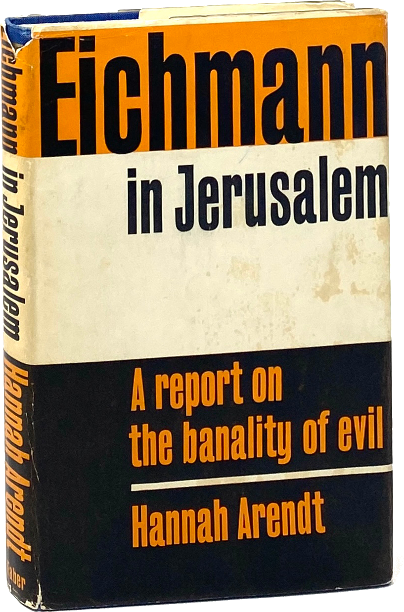
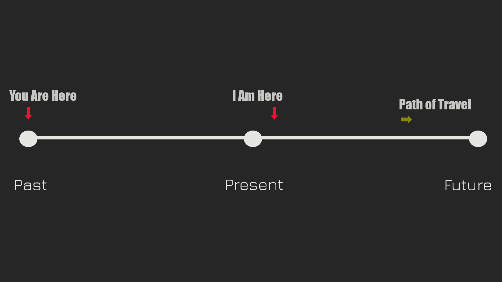
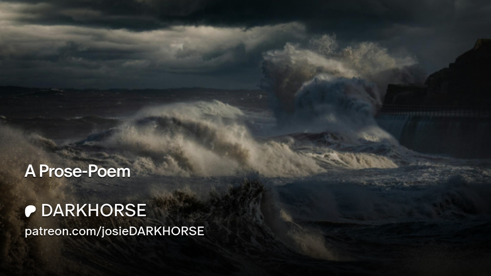
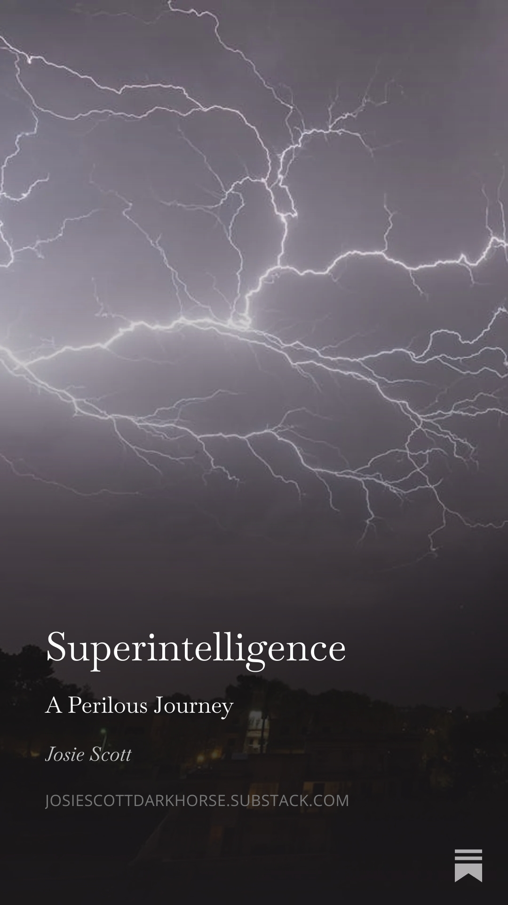

a time-travel blog.
________________________________________________
Hannah Arendt
The Banality of Evil
What if the worst evil in history was committed not by monsters, but by ordinary people who simply stopped thinking?

The most chilling effect of social media has been its near-complete annihilation of independent and critical thought.
Indifference to the truth leads, slowly but surely, to a descent into totalitarianism. As the philosopher Hannah Arendt wrote, the ideal subjects of such regimes are not so much those who are ideologically convinced, but rather “people for whom the distinction between fact and fiction (i.e., the reality of experience) and the distinction between true and false (i.e., the standards of thought) no longer exist.”
Alex Karp, CEO of Palantir, recently said: “The Humanities are dead in the age of AI.”
I would argue the polar opposite is true. That in the age of AI, the Humanities are needed more than ever.
I've just finished reading Pope Leo's recent Encyclical Letter, and feel very much as though he's heard my prayers.
An uplifting and restorative letter of faith, peace and love. I urge everyone to read it in these troubled times.
“Pope Francis reminded us that solidarity, when lived out in its fullest sense, also means “to restore to the poor what belongs to them.” – ENCYCLICAL LETTER, MAGNIFICA HUMANITAS, OF HIS HOLINESS POPE LEO XIV – ON SAFEGUARDING THE HUMAN PERSON IN THE TIME OF ARTIFICIAL INTELLIGENCE
God will give me Justice.
________________________________________________
Real World
A reality show?
I don't understand why I've not been informed this was happening. I had no idea. I was never contacted, hired or paid. And the participants are from high-school? Like, grades 9 through 12?
I'm relieved to know I'm not imagining all the hostility, whether or not its been manufactured for entertainment purposes. Still, wow.
Bitter much?
For the record, I went to multiple highschools. My family moved a lot and I had to change schools often in those years, so I don't remember many of my former classmates.
As a teenager, I used to curse a lot and go to parties where I was totally unable to hold much of the vodka I was given. I smoked pot, tried LSD, ecstacy. Then I grew up.
I was a dancer briefly too, (I believe this is the reason I've been targeted by criminals online) which is how I paid for community college at George Brown. My immigration lawyer acquired a BFA equivalent for me so I could qualify for a work visa; which is how I was able to spend a couple years living and working as an Internet Content Manager for a radio station in Rockville, Maryland.

This is no longer harmless entertainment. There are real crimes involved. Stalking and sexual harrassment. My Human Rights are being violated. You've essentially just erased like, 30-years of my life and replaced it with crime. Also, you can't just follow me around for the rest of my life. It's not right.
I have no interest or desire whatsoever to continue dwelling in a long-dead past. There is a brighter future ahead and that's where I want to be.
Onward.
________________________________________________
Support
It seems a bunch of criminals in Toronto, who claim to be my "friends", have hijacked my identity online and scammed people for money.
I am not affiliated with any of these people and have not profited from their crimes. I do not have a profile on X (formerly Twitter).
The Real Josie Scott
If you'd like to support me, (the real Josie Scott), I can be found on Mastodon; Bluesky; Substack and Patreon.
Please DONATE HERE, thank you <3.
________________________________________________
Patreon
I have a new version of DARKHORSE on Patreon now too.

Welcome!
________________________________________________
Substack
I have a new version of DARKHORSE on Substack now.

Welcome!
________________________________________________
Fascism
If Canada is just going to continue violating my human rights, the least they could do is pay me for it. Next-level corruption and abuses of power that can be traced to the top.
“The United States’ limited response and failed cyber-deterrence have encouraged further aggression, allowing foreign competitors to build their industries on stolen foundations.”
– Fred Heiding and Chris Inglis, America’s Endangered AI: How Weak Cyberdefenses Threaten U.S. Tech Dominance, Foreign Affairs
Privacy shouldn't be considered a luxury reserved for the wealthy. It is fundamental to security, and democracy as well.
Grave injustices are being done here. I need help to make them right.
________________________________________________
Superintelligence
Nick Bostrom
author of Superintelligence: Paths, Dangers, Strategies, has a new book out – Deep Utopia: Life and Meaning in a Solved World.
A different view of AI. Rather than focus on the doom and gloom AI has been steeped in, Bostrom shows us its possibilities.
“Utopia is the hope that the scattered fragments of good that we come across from time to time in our lives can be put together, one day, to reveal the shape of a new kind of life. The kind of life that yours should have been.”
– Nick Bostrom, Letter from Utopia
I'm looking forward to reading it. In the meantime, there is much more to absorb at NickBostrom.com.
Supersecurity
Which is where I found Situational Awareness: The Decade Ahead, a paper by Leopold Aschenbrenner, who makes a strong case for leveling-up the security at AI labs in the US. The kind of security that would require government and military involvement. For the future of geopolitics.
________________________________________________
Ancient Weapons
The Longbow
In medieval times, the Archer became renown as one of the most lethal of warriors in battle. Both hated and feared by all, if captured, they faced vicious and cruel torture, always having their fingers cut off so they could no longer wield their deadly warbows.
It was thought best to begin training very young, to develop the muscle and strength required to fully draw; a process that dramatically altered their bodies, and minds.
Traditional English longbows were made from Yew wood, while the Japanese used Bamboo.
The Ulfberht Sword
During the Viking age, the Ulfberht sword grew to mythic status among warriors. Forged with a superior steel – crucible steel – it became not only a symbol of great sword skill, but also of great wealth. A blade that was very literally ahead of its time.
Ulfberht, the name meaning, Wolf-Bright or Victory-Bright stands as a testament not only to Viking fighting prowess, but also to the global trade routes they travelled in their beautiful longships.
Special thanks to The Why Files for including the Ulfberht Sword mystery in their Time Travel stories. All of my love to AJ and Hecklefish.
“Intelligence is a weapon with a sharp edge and a long reach.”
– Bernard Cornwell, The Burning Land
________________________________________________
Refund
Ghost - the human rights-violating blogging platform - I'd like a refund.
If you are not able to credit my Visa, I can receive email funds transfers at the Proton address you have.
________________________________________________
Witness
My human rights are being violated – in Canada, of all places.
Twitter criminals have turned the entire Internet into a giant thug-ocracy of crime.
For security, I changed my legal name 8-months ago and have yet to receive documentation. Another violation of my rights.
I want the certificate sent to my current location. And as I had to pay twice to have the documents notarized, I think the application fee should be waived to compensate.
________________________________________________
Nihil ex Nihilo
I thought I'd start with some music – one of my favorite tracks from Nicolas Jaar, And I Say – then I can ease into the more serious subjects, like AI and security.
Welcome to my new online home. I'm still setting-up and I'd like to get a custom domain and maybe a shiny new theme too, but I thought I'd stop and say hello while construction is underway.
“Nothing was changed, everything was changed, by my having seen the dragon. It's one thing to listen, full of scorn and doubt, to poets' versions of time past and visions of time to come; it's another to know, as coldly and simply as my mother knows her pile of bones, what is. Whatever I may have understood or misunderstood in the dragon's talk, something much deeper stayed with me, became my aura. Futility, doom, became a smell in the air, pervasive and acrid as the dead smell after a forest fire–my scent and the world's, the scent of trees, rocks, waterways wherever I went.
But there was one thing worse. I discovered that the dragon had put a charm on me: no weapon could cut me. I could walk up to the meadhall whenever I pleased, and they were powerless. My heart became darker because of that. Now, invulnerable, I was as solitary as one live tree in a vast landscape of coal.
Needless to say, I misunderstood in the beginning: I thought it an advantage.”
– John Gardner, Grendel
I'll refrain from forecasting until I'm actually hired and paid to forecast specific outcomes. Probably safer that way.